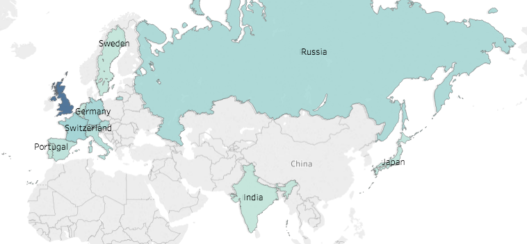
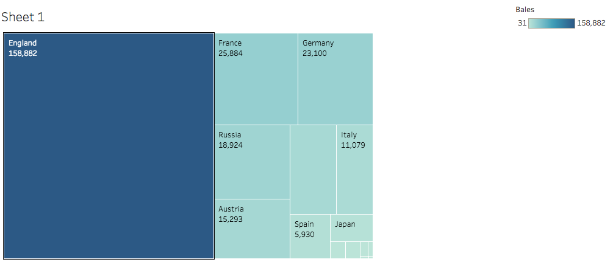
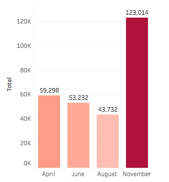
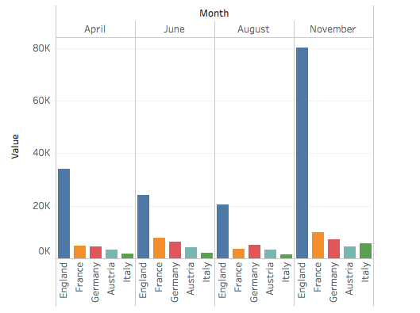

Fluctuation in Egyptian Cotton Exports Throughout the Year
For millennia, cotton has been cultivated extensively in Egypt along the banks of the Nile Valley.
My serial question involves looking at a snapshot in the historical trends of the cotton trade in colonial Egypt. During Egypt’s years under British colonial rule, cotton became an incredibly significant and profitable cash crop. Following the decline in American cotton production because of the American Civil War, England turned to Egyptian cotton as a source of profitable trade within its empire. To gain a sense how the cotton trade behaved during this period, my analysis uses data sourced from cotton export reports from various issues of the English/French language financial newspaper The Egyptian Gazette over the course of the year 1905. Specifically, the data looks at the amount of cotton exported to certain countries on a monthly basis.
When discussing the history of modern Egypt, the development of cotton manufacturing is an invaluable topic. Mohamed Ali, considered the founder of modern Egypt, first encouraged commercial cotton production in Egypt in 1822. With the arrival of cotton came the arrival of finance in Egypt, as European banks encouraged Ali and his successors to borrow at exorbitant interest rates to modernize Egypt, with huge sums of capital coming from the new cotton trade. The most dramatic effects of this irresponsible borrowing came into play when Egypt came under rule of Mohamed Ali’s grandson, Ismail. Ismail wished to turn Cairo into the “Paris on the Nile” through extensive investment in Egyptian infrastructure, borrowing even greater sums of money from European banks, and the opening of Suez Canal. Though the combination of these revolutionary factors did modernize Cairo and the rest of Egypt to great lengths, they also sealed Egypt’s fate of colonization by the French and British. Ismail became so indebted to foreign banks and financial entities that England and France forced him to abdicate in 1879 and once again claimed Egypt for their empires, this time as a single-crop colony capable of producing trade and profit in the modern world through its extensive cotton production.
The Egyptian Gazette is a very interesting resource in regards to this topic as it provides extensive data on various cotton-related exports and trade during the year 1905. The data sources I have chosen provide monthly reports, mainly because the summative nature of these reports is an attribute which I find useful for examining macroeconomic trends. These monthly cotton tables also provide the destinations of the bale exports, something which provides digital historians such as ourselves many unique and fun ways to present and play with the data to build a cumulative picture on international trade. Building this larger picture from the ground up is an exercise which I believe resonates with the main goal of this course.

I used the Tableau software to create the graphic visualizations of my data. The first graphic shown here shows the countries that received cotton exports from Egypt. The depth of the blue shading indicates the relative ranks of these countries in terms of how many bales were exported to them. The box graphic below shows the total number of bales and their relative size to one another in more detail. Not surprisingly, the United Kingdom by far received the most exports, almost 160,000 bales in total. This is roughly six times greater than the second most popular export destination, France, with almost 26,000 bales in total.

The first conclusion I derived from this data is that England was clearly the dominant colonial power not just when it came to ruling Egypt, but when it came to extracting its resources. No other country even came close to receiving as many cotton bales as England over the course of the year, in fact, England’s cotton exports outnumbered the total cotton exports received by all the other countries put together by quite a considerable margin. This analysis, of course, is limited just to Egyptian sources of cotton and does not speak to the relative economic power or consumption of these countries. However, it does at least show that in the case of Egyptian cotton, one of the world’s largest cotton markets at the time, England reigned supreme.
It is also interesting to note the global powers that received the most exports besides England, specifically, France, Germany, Russia, Austria, and Italy. These powers were at the time still the dominant global forces in European and world affairs. England’s preferred exportation relationship with these powers speaks to the nature of the international relations at the turn of the 20th century. Primarily, it suggests that England and its British Empire were the most powerful and important international entity at the time. This claim is supported by the fact that so many different powers around the world chose to export resources from an English colony, including Russia and Japan which were at war with one another at the time. This economic codependence amongst states that were in present conflict is at the very least interesting for historians when economic sanctions and exclusionary international trade deals are very prevalent in today’s world. This is due, perhaps, to Britain’s central role in maintaining world peace and stability during Pax Britannica.

The above chart shows the total cotton exportation by month in terms of bales. The most obvious trend seen here is a decline from April to August, followed by a massive increase in exports. This makes a certain amount of sense, since the cotton harvest ends in November and thus would most likely result in an observable increase in exportation. The magnitude at which it does remains puzzling, however. Contributing factors to this phenomenon could be a worldwide spike in demand, a depreciation in cotton share value, or a domestic policy by Britain to dramatically increase its exports from Egypt. To satisfy this particular query, I analyzed individual monthly trends from five of the biggest importers and created the graph below.

As this graph clearly shows, the most significant spike in exports during the month of November came from England. This fact adds credence to the hypothesis that a domestic policy in Britain was most likely the deciding factor in the November export spike, as England’s roughly 80,000 cotton bales accounts for the clear majority of the total 123,014 cotton bales exported in the month of November.
When I began the process of developing and exploring a relevant serial question for this course, I decided to look through a financial lens. My decision to do so almost inevitably brought me to the topic of the cotton trade in Egypt. After all, commercial cotton production was the factor that brought modern finance to Egypt, for better or for worse. The conclusions I drew from analyzing this data ended up telling a story that went far beyond what I imagined was the likely scope of this project. For this reason, I believe the ultimate point illustrated here is that small, individual bits of data or seemingly insignificant recordings of events have the power to paint a very large and interesting historical picture. Since the main goal of this microhistory course was to prove that very point, I am glad that my research arrived at similar conclusions. date: 2016-12-07
Dante Grieco
Student
The author, a student at Florida State University, was enrolled in the digital microhistory lab in fall 2016.